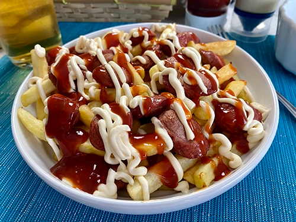

Receta de la Salchipapa
Volver a la página principal: Página Principal
Descripción
La salchipapa es un plato de comida rápida muy popular en Ecuador, Perú y Colombia, que combina papas fritas crujientes con salchichas doradas y se sirve con acompañada de salsas como mayonesa y salsa de tomate.

Lista de ingredientes
- 4 papas grandes
- 4 unidades de salchichas cortadas en rodajas
- Aceite para freír
- Sal
- Salsa de tomate y mayonesa
Preparación
-
Freír las papas en abundante aceite caliente hasta que estén doradas y crujientes. Escurrir en papel absorbente y salar al gusto.
-
Dorar las salchichas en una sartén con un poco de aceite hasta que tomen color.
-
Mezclar las papas fritas con las salchichas doradas en un plato grande.
-
Servir caliente, acompañado de las salsas preferidas.